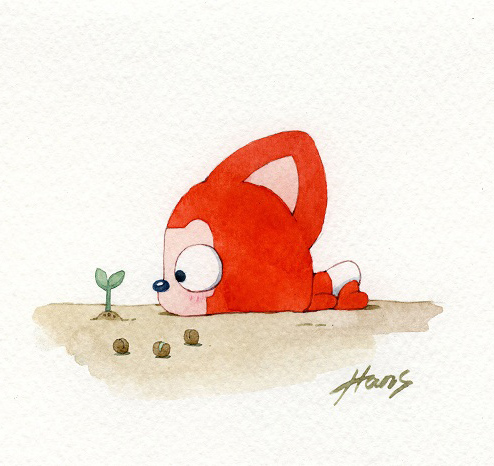
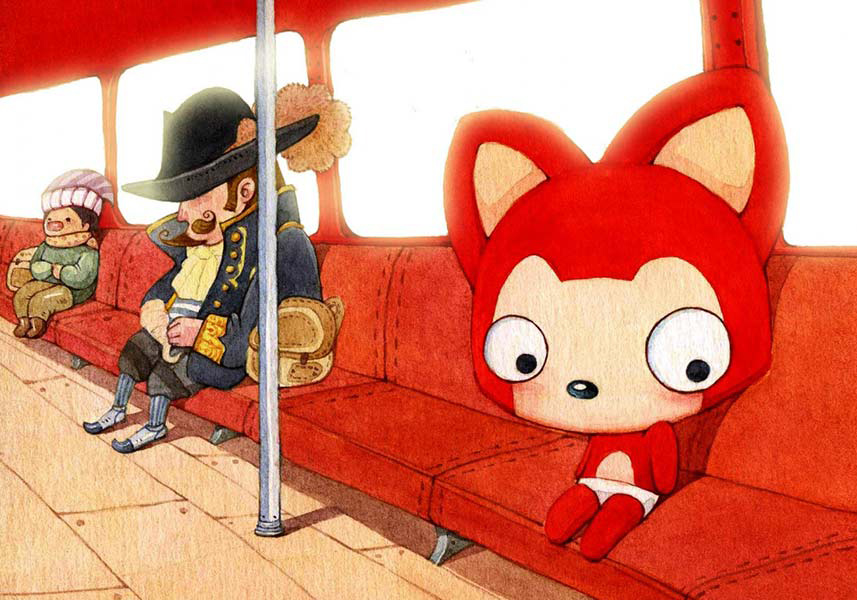
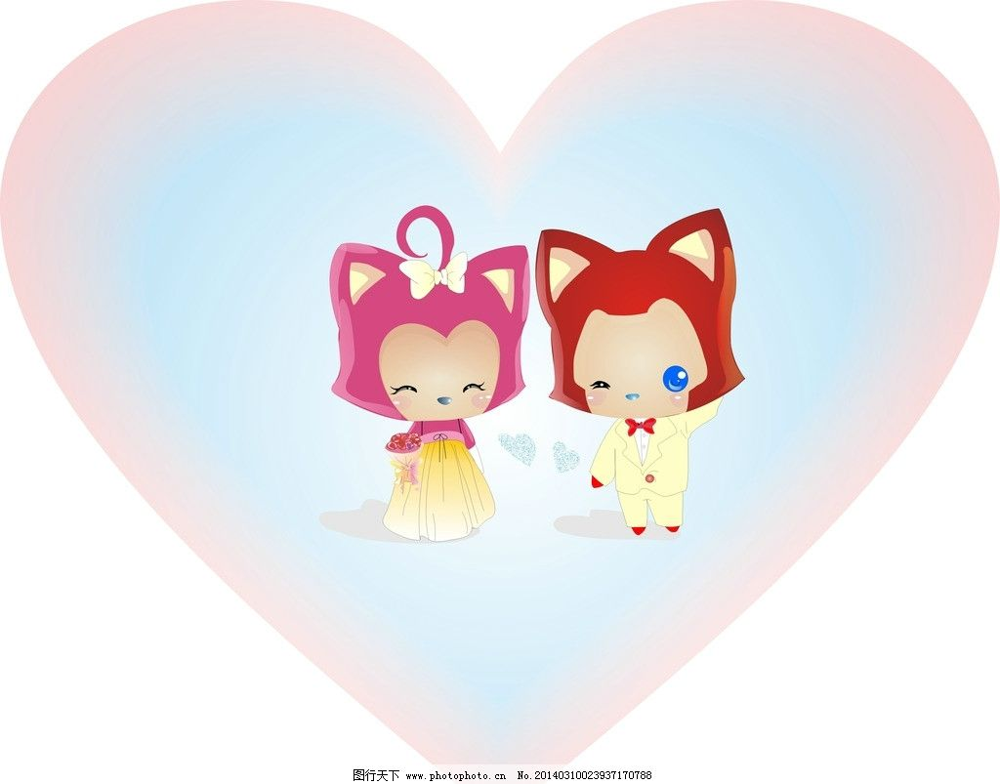

LZW ❤ LAX，我想陪你一起度过余生
按键盘 "↓" 倾听我鼓起勇气的表白...
过去的小V一直是一个人生活，享受着孤独，也憧憬着爱情。

一个人的旅行
一个人的生活
一个人的地铁
一个人的游乐场

但他依然乐观，微笑着，等待着
生活难免有风风雨雨
他总是能够轻松的应对

并且面带阳光、自信的笑容

生活也不会总是一帆风顺

但他每次都能勇敢的面对
随时准备接受生活的挑战


可是小V的爱情又在哪里呢？
他每天静默地看着窗外
他去问天，我的爱情在哪里？
天告诉他，也许就在不远的地方

于是，小V一个人继续向前走
走在茫茫的雪地上

直到小V再次与小公主相遇

小V喜欢小公主，因为小公主的出现，小V脸上有了更加灿烂的笑容
可是小公主会喜欢小V吗？


小V鼓起了勇气去追小公主

能遇到小公主，小V好高兴
不管多远，小V也要去找小公主

去小公主的城市
虽然不知道聊什么
但是能看到小公主
小V心里好开心

直到很晚
小V才会一个人回家

然后高兴地进入梦乡，每天都能梦到小公主

梦到小V和小公主一起去逛街

在梦里带小公主一起去玩
好安逸的梦...

可那仅仅只是一场梦
只有让自己优秀才可能让梦变得现实
于是小V开始努力学习

煮饭

每天早上，他们吃着自己做的美食

然后在同一个站台，高高兴兴的一起上班
小V感觉自己好幸福。
因为自己有了家
那个有小公主在的地方

他们偶尔也会吵架

小V不想这样


一定是我有什么做的不对，小V在想
如果没有小公主在身边，窗外就没有风景

如果没有小公主在身后


小V又怎会飞的更高更远
小V不想这样。他要为小公主改变自己
小公主说她喜欢狮子座的人，于是小V许下愿望


我愿为你变成狮子座
爱情就像花草一样
需要用包容来浇灌

再到后来，小公主要过生日了
小V开始为小公主准备礼物


看着礼物一件件准备好了 小V好开心 因为他想象着小公主收到礼物时 开心的样子

想想后面还有一辈子 小V好开心 因为可以和小公主 去全世界好多地方玩
小V也会继续努力
为了他和小公主的梦之城堡

小V很幸福，因为他找到了小公主。他相信后面的每天都会是快乐的
简简单单，体会着与小公主在一起的每一个刻

后来的一天，小公主说她不敢坐山车了，于是小V就带她到别的地方玩。这只是他们幸福生活中的一件小事，小到无法引起别人的注意。可这是属于小V和小公主的幸福生活。


小公主：永远有多远？
小V：比时间多一秒就是永远，我会永远爱你
小公主：世界有多大？
小V：你走到哪里，世界就有多大
愿得一人心，白首不相离


情人节快乐
I love you

小V和小公主的故事会一直继续下去。
无论精彩、平淡都会是他们喜欢的。
-- 按“Esc"键有惊喜